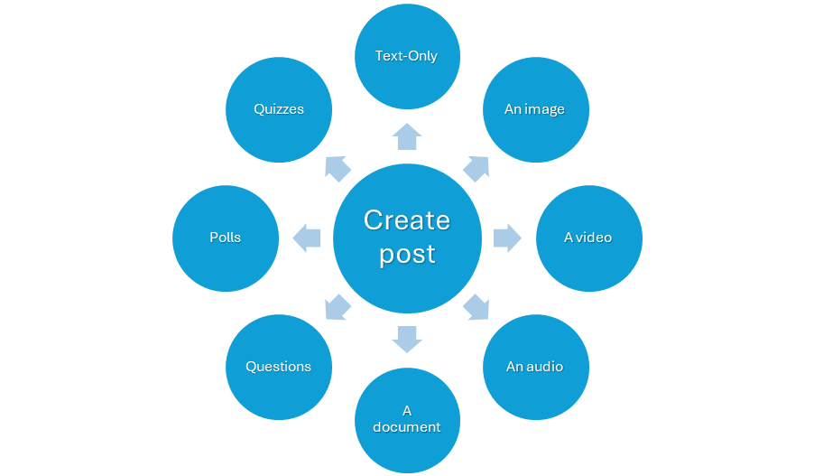

Table of Content
Tech Writers Tribe is an application that helps the technical writing community in the software industry to stay connected. The Post feature of Tech Writers Tribe allows you to express your thoughts, ideas, and queries using text and media formats. This Quick Start Guide is to assist you in creating a post in the TWT app.
Prerequisites
Stable internet connection
Signed in to Tech Writers Tribe application
Creating a post helps engage the attention of your audience and encourages interaction with your content. You can post in the Feed section of the Tech Writers Tribe app. The app offers several post options including text, media, polls, and quizzes.

Available options to create a post in TWT app.
This feature helps you convey your message in the text format.
To create a text-only post,
On your device, open the Tech Writers Tribe application.
In the Feed section, tap .
The options are displayed.
Select Post from the options.
The Share a Post page is displayed.
In the What would you like to share today? field, enter your text.
Note: You can use Add Tag to add a category to help users filter posts.
Select Post.
Your text is posted.
This feature helps you convey your message in the image format.
Prerequisite: An image file.
To share an image post,
On your device, open the Tech Writers Tribe application.
In the Feed section, tap .
The options are displayed.
Select Post from the options.
The Share a Post page is displayed.
Select Photos.
The gallery of photos is displayed.
Select the photos you wish to share.
Select Add.
The Share a Post page is displayed with your selected image.
Note: You can use Add Tag to add a category to help users filter posts.
Select Post.
Your image is posted.
This feature helps you convey your message in the video format.
Prerequisite: A video file.
To share a video post,
On your device, open the Tech Writers Tribe application.
In the Feed section, tap .
The options are displayed.
Select Post from the options.
The Share a Post page is displayed.
Select Videos.
The gallery of videos is displayed.
Select the video you wish to share.
Select .
The Share a Post page is displayed with your selected video.
Note: You can use Add Tag to add a category to help users filter posts.
Select Post.
Your video is posted.
This feature helps you convey your message in the audio format.
To share an audio post,
On your device, open the Tech Writers Tribe application.
In the Feed section, tap .
The options are displayed.
Select Post from the options.
The Share a Post page is displayed.
Select Audio.
The access allow popup is displayed.
Select Allow.
The recording is started.
Record your message.
Select STOP RECORDING when your message is complete.
The Share a Post page is displayed with your recorded audio.
Note: You can use Add Tag to add a category to help users filter posts.
Select Post.
Your audio is posted.
This feature helps you convey your message in the document format.
Prerequisite: A document file.
To share a document post,
On your device, open the Tech Writers Tribe application.
In the Feed section, tap .
The options are displayed.
Select Post from the options.
The Share a Post page is displayed.
Select Documents.
The Recent Files page is displayed.
Select the files you wish to share.
The Share a Post page is displayed with your selected file.
Note: You can use Add Tag to add a category to help users filter posts.
Select Post.
Your document is posted.
This feature helps you express your questions and doubts.
To ask a question,
On your device, open the Tech Writers Tribe application.
In the Feed section, tap .
The options are displayed.
Select Question from the options.
The Share a Question page is displayed.
In the Question field, enter your question.
Note: You can use Add Tag to add a category to help users filter posts.
Select Post Question.
Your question is posted.
This feature helps you to get a survey or measure the opinions of your question posted.
To share a poll,
On your device, open the Tech Writers Tribe application.
In the Feed section, tap .
The options are displayed.
Select Poll from the options.
The Share a Poll page is displayed.
Enter the following options:
a. In the Question section, enter your question.
b. In the Options section, enter your options.
c. Select Add more to provide additional options.
Note: You can use Add Tag to add a category to help users filter posts.
Select Post Poll.
Your poll is posted.
This feature helps you to share your knowledge and engage with your audience.
To share a quiz,
On your device, open the Tech Writers Tribe application.
In the Feed section, tap .
The options are displayed.
Select Quiz from the options.
The Share a Quiz page is displayed.
Enter the following options:
a. In the Question section, enter your question.
b. In the Options section, enter your options.
c. Select Add more to provide additional options.
d. In the Answer section, select the right answer.
The Expires In section is displayed.
e. From the drop-down list, select an expiry option.
Note: You can use Add Tag to add a category to help users filter posts.
Select Post Quiz.
Your quiz is posted.